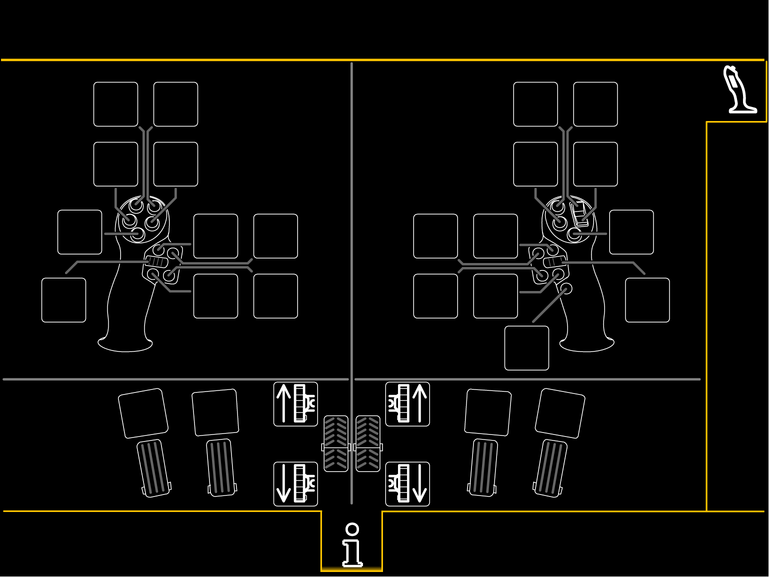
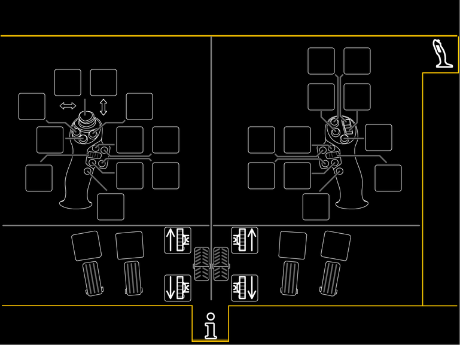
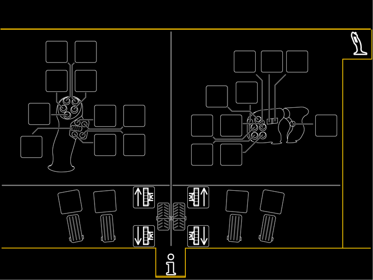
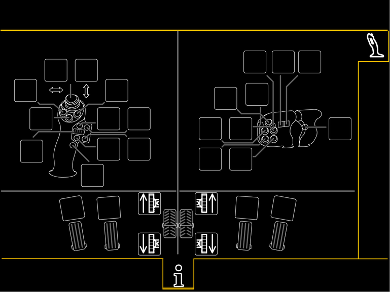
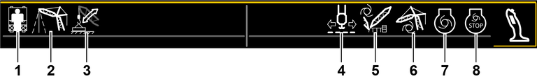

Bildschirmseite Funktionsbelegung
Taste Bildschirmseite Funktionsbelegung
Auf Bildschirmseite Funktionsbelegung umschalten.
Die Bildschirmseite Funktionsbelegung dient zur Visualisierung der Funktionsbelegung der Bedienhebel und Pedalen. Die Darstellung der Bedienhebel und Pedalen sind abhängig von der Maschinenkonfiguration.

Funktionsbelegung der Bedienhebel bei einer Maschine mit zwei Kreuz-Bedienhebeln

Fig. 2295: Bildschirmseite Funktionsbelegung mit zwei Kreuz-Bedienhebeln
Fig. 2295: Bildschirmseite Funktionsbelegung mit zwei Kreuz-Bedienhebeln

Fig. 2296: Bildschirmseite Funktionsbelegung mit zwei Kreuz-Bedienhebeln und Daumen-Joystick
Fig. 2296: Bildschirmseite Funktionsbelegung mit zwei Kreuz-Bedienhebeln und Daumen-Joystick

Funktionsbelegung der Bedienhebel bei einer Maschine mit einem Kreuz-Bedienhebel und einem Doppel-T-Bedienhebel

Fig. 2298: Bildschirmseite Funktionsbelegung mit einem Kreuz-Bedienhebel und einem Doppel-T-Bedienhebel
Fig. 2298: Bildschirmseite Funktionsbelegung mit einem Kreuz-Bedienhebel und einem Doppel-T-Bedienhebel

Fig. 2299: Bildschirmseite Funktionsbelegung mit einem Kreuz-Bedienhebel mit Daumen-Joystick und einem Doppel-T-Bedienhebel
Fig. 2299: Bildschirmseite Funktionsbelegung mit einem Kreuz-Bedienhebel mit Daumen-Joystick und einem Doppel-T-Bedienhebel

Anzeige Hupe
Hupen.

Anzeige Volle Zugkraft der Beruhigungswinde
Volle Zugkraft der Beruhigungswinde einschalten oder ausschalten.

Anzeige Freifall der Beruhigungswinde
Freifall der Beruhigungswinde einschalten.
Anzeige Greifer schließen
Greifer schließen.
Anzeige Greifer öffnen
Greifer öffnen.
Anzeige Senkensteuerung
Senkensteuerung einschalten.

Anzeige Drehwerksfreilauf
Drehwerksfreilauf einschalten.

Anzeige Drehzahl des Dieselmotors speichern
Aktuelle Motordrehzahl speichern.

Anzeige Drehzahl des Dieselmotors erhöhen
Motordrehzahl erhöhen.

Anzeige Drehzahl des Dieselmotors verringern
Motordrehzahl verringern.
Anzeige Montagezylinder
Montagezylinder bedienen.

Anzeige Geschwindigkeitsstufe des Hauptauslegers
Hauptausleger bedienen. Aktuelle Geschwindigkeitsstufe der Hauptauslegerverstellung wird angezeigt.

Anzeige Drehwerk
Drehwerk bedienen. Aktuelle Geschwindigkeitsstufe des Drehwerks wird angezeigt.

Anzeige Winde1
Winde1 bedienen.

Anzeige Winde2
Winde2 bedienen.

Anzeige Hilfswinde
Hilfswinde einschalten.

Anzeige Windengleichlauf
Windengleichlauf einschalten.
Anzeige Greifersteuerung
Greifersteuerung ohne Druckausgleich einschalten.
Anzeige Greifersteuerung
Greifersteuerung mit Druckausgleich einschalten.

Anzeige Exzenterverstellung ausfahren
Exzenterverstellung ausfahren.

Anzeige Exzenterverstellung einfahren
Exzenterverstellung einfahren.

Anzeige Rüttler
Rüttler einschalten oder ausschalten.
Anzeige Hammer
Hammer einschalten oder ausschalten.
Anzeige Magnet
Magnet einschalten oder ausschalten.

Anzeige Klemmzangen schließen
Klemmzangen schließen.
Anzeige Gang des Bohrantriebs erhöhen
Gang des Bohrantriebs erhöhen.
Anzeige Gang des Bohrantriebs verringern
Gang des Bohrantriebs verringern.
Anzeige Bohrantrieb einschalten
Bohrantrieb einschalten.
Anzeige Schneckenputzer nach oben bewegen
Schneckenputzer nach oben bewegen.
Anzeige Schneckenputzer nach unten bewegen
Schneckenputzer nach unten bewegen.
Anzeige Bedienhebelsignal speichern
Bedienhebelsignal speichern.

Anzeige Geschwindigkeitsstufe des Nadelauslegers
Nadelausleger bedienen. Aktuelle Geschwindigkeitsstufe der Nadelauslegerverstellung wird angezeigt.

Anzeige Vertical Line Finder
Ausleger-Kopf über dem Schwerpunkt der Last positionieren.
Anzeige Horizontaler Lastweg der Winde1
Assistenzsystem Horizontaler Lastweg der Winde1 aktivieren.
Anzeige Horizontaler Lastweg der Winde2
Assistenzsystem Horizontaler Lastweg der Winde2 aktivieren.

Fig. 2335: Bildschirmausschnitt Assistenzsysteme (ausschließlich bei Betriebsart Hebezeug)
Fig. 2335: Bildschirmausschnitt Assistenzsysteme (ausschließlich bei Betriebsart Hebezeug)
Anzeige Betriebart Heben von Personen | |
Anzeige Assistenzsystem Vertical Line Finder | |
Anzeige Ausladungskompensation | |
Anzeige Assistenzsystem Horizontaler Lastweg | |
Anzeige Boom Up-and-Down Assistant - Derrick Assembly Assistant | |
Anzeige Assistenzsystem Boom Up-and-Down Assistant - Boom Up-and-Down Aid 2.0 | |
Anzeige Dieselmotor-Drehzahl-Automatik | |
Anzeige Dieselmotor-Stopp-Automatik |
Anzeige Betriebart Heben von Personen
Betriebart Heben von Personen ist nicht freigegeben.
Anzeige Betriebart Heben von Personen
Betriebart Heben von Personen ist freigegeben.
Betriebart Heben von Personen ist nicht gewählt.
Anzeige Betriebart Heben von Personen (leuchtet grün)
Betriebart Heben von Personen ist freigegeben.
Betriebart Heben von Personen ist gewählt.
Anzeige Assistenzsystem Vertical Line Finder
Assistenzsystem Vertical Line Finder ist nicht freigegeben.
Anzeige Assistenzsystem Vertical Line Finder
Assistenzsystem Vertical Line Finder ist freigegeben.
Assistenzsystem Vertical Line Finder ist nicht aktiviert.
Anzeige Assistenzsystem Vertical Line Finder (leuchtet grün)
Assistenzsystem Vertical Line Finder ist freigegeben.
Assistenzsystem Vertical Line Finder ist aktiviert.
Anzeige Ausladungskompensation
[nicht belegt]
Anzeige Assistenzsystem Horizontaler Lastweg
Assistenzsystem Horizontaler Lastweg ist nicht freigegeben.
Anzeige Assistenzsystem Horizontaler Lastweg
Assistenzsystem Horizontaler Lastweg ist freigegeben.
Assistenzsystem Horizontaler Lastweg ist nicht aktiviert.
Anzeige Assistenzsystem Horizontaler Lastweg (leuchtet grün)
Assistenzsystem Horizontaler Lastweg ist freigegeben.
Assistenzsystem Horizontaler Lastweg ist aktiviert.
Anzeige Boom Up-and-Down Assistant - Derrick Assembly Assistant
[nicht belegt]
Anzeige Assistenzsystem Boom Up-and-Down Assistant - Boom Up-and-Down Aid 2.0
Boom Up-and-Down Aid 2.0 ist nicht freigegeben.
Anzeige Assistenzsystem Boom Up-and-Down Assistant - Boom Up-and-Down Aid 2.0
Boom Up-and-Down Aid 2.0 ist freigegeben.
Boom Up-and-Down Aid 2.0 ist nicht eingeschaltet.
Anzeige Assistenzsystem Boom Up-and-Down Assistant - Boom Up-and-Down Aid 2.0 (leuchtet grün)
Boom Up-and-Down Aid 2.0 ist freigegeben.
Boom Up-and-Down Aid 2.0 ist eingeschaltet.
Anzeige Dieselmotor-Drehzahl-Automatik
[nicht belegt]
Anzeige Dieselmotor-Stopp-Automatik
Dieselmotor-Stopp-Automatik ist nicht freigegeben.
Anzeige Dieselmotor-Stopp-Automatik
Dieselmotor-Stopp-Automatik ist freigegeben.
Dieselmotor-Stopp-Automatik ist nicht eingeschaltet.
Anzeige Dieselmotor-Stopp-Automatik (leuchtet grün)
Dieselmotor-Stopp-Automatik ist freigegeben.
Dieselmotor-Stopp-Automatik ist eingeschaltet.